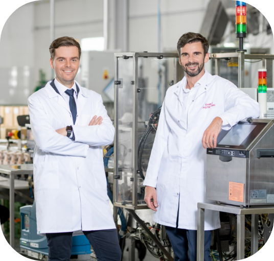

-
Rodzinna firma z tradycjami
Aerosol Service to firma z 30-letnim doświadczeniem w produkcji kontraktowej i private label w sektorach kosmetycznym i chemii gospodarczej. Nasza pasja i zaangażowanie w tworzenie produktów sprawiają, że jesteśmy niezwykle cenieni przez naszych partnerów biznesowych. Jesteśmy dumni z tego, że nasza wysoka jakość produktów jest doceniana przez wielu klientów, których produkty można znaleźć na półkach sklepów na całym świecie. Nieustannie dążymy do doskonalenia naszych usług i tworzenia innowacyjnych rozwiązań, które mają realny wpływ na jakość życia konsumentów na całym świecie.
- 
Aerosol Service to firma z 30-letnim doświadczeniem w produkcji kontraktowej i private label w sektorach kosmetycznym i chemii gospodarczej. Nasza pasja i zaangażowanie w tworzenie produktów sprawiają, że jesteśmy niezwykle cenieni przez naszych partnerów biznesowych. Jesteśmy dumni z tego, że nasza wysoka jakość produktów jest doceniana przez wielu klientów, których produkty można znaleźć na półkach sklepów na całym świecie. Nieustannie dążymy do doskonalenia naszych usług i tworzenia innowacyjnych rozwiązań, które mają realny wpływ na jakość życia konsumentów na całym świecie.
-
Wspólnie tworzymy przyszłość
W Aerosol Service wiemy, że młodzież jest fundamentem przyszłych sukcesów. Dlatego angażujemy się w sponsoring młodzieżowych drużyn sportowych oraz imprez o znaczeniu zarówno regionalnym, jak i ponadregionalnym. Pragniemy inspirować i wspierać talent, rozwijając pasję oraz budując silne więzi w lokalnej społeczności. Nasze zaangażowanie to wkład w przyszłość naszej młodzieży i budowanie lepszego jutra.
-
Odpowiedzialność to podstawa
Zaangażowanie w ochronę środowiska jest dla nas priorytetem. Działamy z pełną świadomością ekologiczną, stosując innowacyjne rozwiązania i technologie przyjazne dla natury. Podejmujemy działania na rzecz zrównoważonego rozwoju, dbając o naszą planetę dla przyszłych pokoleń.
Społecznie świadomi
W Aerosol Service jesteśmy społecznie świadomą firmą, dla której odpowiedzialność społeczna jest kluczową wartością. Działamy zgodnie z etycznymi zasadami, dbając o dobro naszych pracowników, klientów i środowiska. Nasza świadomość społeczna motywuje nas do podejmowania działań na rzecz społeczności lokalnej i szerzenia pozytywnego wpływu. Jesteśmy wiarygodnym partnerem, który dba o dobro wspólne.